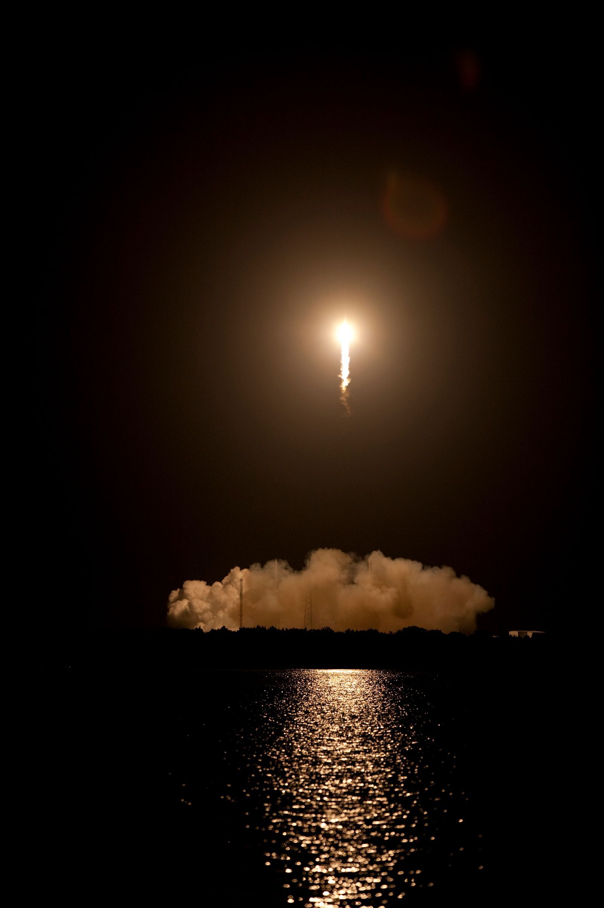
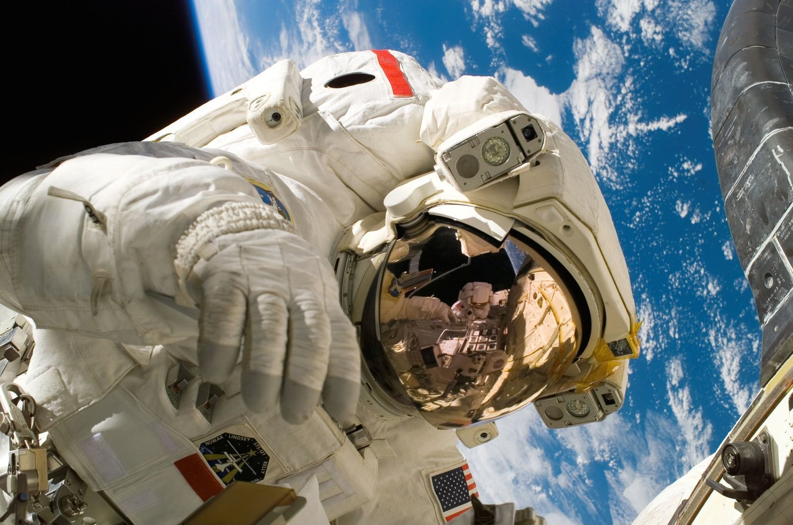

Capítulo 8
Más allá del cielo
Por qué las alas necesitan aire, cómo volvía planeando el transbordador y qué hace falta para volar en Marte.
Hasta donde se acaba el aire, alrededor de la Tierra, de vuelta planeando y rumbo a Marte.

8.1 Por qué las alas necesitan aire

Un ala no puede empujar la nada.
Un ala crea sustentación moviéndose por el aire. Cuanto más aire y más rápido se mueve el ala, más sustentación crea. La ecuación de sustentación de la NASA contiene la densidad del aire y la velocidad1.
A nivel del mar el aire pesa unos 1,2 kg por cada metro cúbico3. Si subes, el aire se hace más escaso. A gran altura hay tan poco que el ala casi no tiene con qué trabajar.
8.2 El borde del espacio

El cielo no termina en un muro. Se desvanece.
Aun así, la gente traza una línea. La federación aeronáutica internacional, la FAI, sitúa el borde del espacio a 100 km sobre el nivel del mar, la línea de Kármán. Estados Unidos usa 80 km, es decir, 50 millas4.
El número 100 es una cifra redonda. Theodore von Kármán propuso buscar la altura a la que el aire es tan fino que un ala tendría que volar tan rápido como un satélite para sostenerse. Él nunca publicó una cifra. El abogado espacial Andrew Haley usó su idea y obtuvo unos 84 km5.
En 2018 el astrofísico Jonathan McDowell mostró que hay satélites que dan más de una vuelta a la Tierra por debajo de 100 km, y defendió los 80 km5. La FAI calificó de «convincente» el argumento para bajar la línea y propuso una reunión de expertos para estudiarlo6.
8.3 Tsiolkovski y Koroliov

Un maestro que había perdido el oído de niño calculó cómo podría un cohete llegar al espacio. Décadas después, un ingeniero cuyo nombre era secreto lo construyó.
Konstantín Tsiolkovski perdió el oído a los diez años, por la escarlatina, y estudió solo en casa. Fue maestro en Kaluga. En 1911 escribió: «La Tierra es la cuna de la humanidad, pero no se puede vivir para siempre en la cuna»7.
Su ecuación del cohete dice que la velocidad de un cohete depende de dos cosas: lo rápido que salen sus gases hacia atrás y cuánto de su peso inicial es combustible. Para llegar a la órbita, casi todo el cohete debe ser combustible, así que propuso cohetes por etapas que se sueltan al vaciarse8,7.
Serguéi Koroliov dirigió el equipo que construyó el cohete R-7, que lanzó el Sputnik y a Yuri Gagarin. En 1938 lo habían detenido y enviado a prisión. Mientras vivió, el mundo solo lo conoció como el Diseñador Jefe. Murió en 19669.
8.4 Sputnik y Laika

En octubre de 1957 una bola de metal del tamaño de un balón de playa empezó a pitar desde la órbita.
El 4 de octubre de 1957 la Unión Soviética lanzó el Sputnik 1, una bola de 58 cm de diámetro que pesaba 83,6 kg. No llevaba instrumentos científicos, solo una radio cuyo pip-pip se podía seguir en todo el mundo. Daba una vuelta a la Tierra cada 96 minutos más o menos11,12.
Sus baterías se agotaron a los 22 días. El 4 de enero de 1958 volvió a caer en la atmósfera10.
El 3 de noviembre de 1957 el Sputnik 2 llevó a una perra llamada Laika, el primer animal en orbitar la Tierra. No había forma de traerla de vuelta, y vivió solo unas horas en órbita. Se la recuerda como el primer animal que dio la vuelta a nuestro planeta10.
8.5 Gagarin y Tereshkova

«Poyejali», «Vámonos». Con esa palabra, Yuri Gagarin dejó la Tierra.
El 12 de abril de 1961 Yuri Gagarin dio una vuelta a la Tierra en la Vostok 1, la primera persona en el espacio. Al despegar el cohete en Baikonur dijo «Poyejali». El vuelo duró 108 minutos16,17.
Cerca del final, a unos 7 km del suelo, salió de la cápsula en su asiento eyectable y bajó con su propio paracaídas en la región de Sarátov17.
El 16 de junio de 1963 Valentina Tereshkova, de 26 años, fue la primera mujer en el espacio. Había trabajado en una fábrica textil y saltaba en paracaídas en el aeroclub de su ciudad. Su indicativo era Chaika, «Gaviota». Voló casi tres días18,19.
8.6 Un traje y un paseo espacial

Para ir donde se acaba el aire, tienes que llevar tu propio aire contigo.
En 1935 Emilio Herrera, ingeniero granadino, diseñó una escafandra presurizada para un vuelo en globo a más de 20 000 m. Su casco tenía visor, micrófono y su propio sistema de respiración22. La Guerra Civil empezó antes del vuelo, que nunca se hizo23.
El 18 de marzo de 1965 Alexéi Leónov salió de la Vosjod 2 y flotó en el espacio unos 12 minutos, la primera persona en hacerlo. En el vacío su traje se infló y se puso rígido. Sin consultar con tierra, dejó escapar algo de aire y así pudo doblarse lo justo para volver a entrar20.
Leónov también era artista. Llevó lápices de colores al espacio e hizo los primeros dibujos de la Tierra desde la órbita20.
8.7 Cronología: al espacio

Lee de arriba abajo, de las cuentas de un maestro a un helicóptero en Marte.
- 1903Konstantín Tsiolkovski describe la ecuación del cohete8.
- 4 de octubre de 1957El Sputnik 1, el primer satélite artificial10.
- 12 de abril de 1961Yuri Gagarin, la primera persona en el espacio16.
- 16 de junio de 1963Valentina Tereshkova, la primera mujer en el espacio18.
- 18 de marzo de 1965Alexéi Leónov hace el primer paseo espacial20.
- 20 de julio de 1969El Apolo 11 se posa en la Luna. Neil Armstrong y Buzz Aldrin caminan por ella24.
- 12 de abril de 1981Despega el primer transbordador espacial, el Columbia, 20 años justos después de Gagarin25.
- 15 de noviembre de 1988El Buran da dos vueltas a la Tierra y aterriza sin nadie a bordo32.
- 29 de octubre de 1998Pedro Duque es el primer español en el espacio, a bordo del Discovery26.
- 21 de diciembre de 2015Por primera vez, una etapa de cohete de un lanzamiento orbital vuelve y aterriza de pie48.
- 19 de abril de 2021Ingenuity hace el primer vuelo con motor en otro planeta39.
8.8 El avión cohete X-15
Lo soltaba un bombardero, encendía su cohete dos minutos o menos y volvía planeando.
Tres aviones cohete X-15 volaron 199 veces entre 1959 y 1968. Un B-52 subía cada uno hasta unos 13 700 m y lo soltaba27.
Su motor funcionaba de 80 a 120 segundos. El resto del vuelo, de 8 a 12 minutos en total, iba sin motor y acababa en un aterrizaje planeando a unos 320 km/h sobre un lago seco. Su tren principal eran patines, como un trineo27.
Alcanzó 7274 km/h, Mach 6,7, en 1967, y 107,96 km de altura, por encima de la línea de 100 km, en 196327.
8.9 Volver a casa planeando
Algunas naves aterrizan como planeadores. Nada tira de ellas. Caen hacia delante.
El orbitador del transbordador espacial aterrizaba sin motor. Su planeo de vuelta empezaba una hora antes de tocar tierra, al otro lado del planeta29. La NASA le da una relación de planeo de cerca de 1, frente a unos 70 de un velero de altas prestaciones, porque tenía que frenar de unos 27 800 km/h a unos 400 km/h28.
Se acercaba con una pendiente de unos 20 grados, más de seis veces más empinada que la de un avión de pasajeros, y tocaba tierra a entre 343 y 364 km/h. No había segunda oportunidad29.
El transbordador soviético Buran voló una sola vez. El 15 de noviembre de 1988 subió sin tripulación, dio dos vueltas a la Tierra y aterrizó solo en Baikonur. Su constructora, Energia, dijo que nunca antes una nave de su clase había aterrizado de forma totalmente automática30,31.
8.10 Aviones de papel en la estratosfera

Nunca se ha lanzado un avión de papel desde el espacio. Pero los globos los han llevado un tercio del camino.
En 2010 un equipo de la web británica de noticias tecnológicas The Register subió un avión de papel llamado Vulture 1 bajo un globo sobre el centro de España. Lo soltaron a unos 27 300 m, casi 90 000 pies34,36. Guinness World Records lo reconoció como el lanzamiento de avión de papel más alto35.
En 2015 el club de ciencias del instituto Kesgrave High School, cerca de Ipswich, en Inglaterra, lo superó. Su Stratos III se soltó desde un globo de gran altitud a 35 043 m37,36.
Es más o menos el doble de alto de lo que volaba el Concorde, y un tercio del camino hasta la línea de 100 km estimación38.
8.11 El avión de papiroflexia que nunca se lanzó

Un equipo japonés planeó soltar aviones de papel desde la estación espacial. Los aviones se probaron. Nunca se lanzaron.
En 2008 Takuo Toda, presidente de la Asociación Japonesa del Avión de Origami, y Shinji Suzuki, ingeniero aeroespacial de la Universidad de Tokio, anunciaron el plan de soltar pequeños aviones de origami desde la Estación Espacial Internacional. Un astronauta japonés soltaría unos 100 desde unos 400 km de altura44.
A principios de 2008 un pequeño prototipo, con forma de transbordador espacial, entró en un túnel de viento hipersónico de la Universidad de Tokio. Resistió Mach 7, siete veces la velocidad del sonido, y temperaturas que se citan de unos 230 a 250 °C44,45.
Nunca se lanzó ningún avión desde la estación. El lanzamiento se fijó de forma provisional para 2009. En 2009 el equipo lo aplazó, porque sería casi imposible seguir a los aviones durante un descenso de una semana y nadie estaba seguro de que alguno sobreviviera a la reentrada46.
8.12 Marte: un helicóptero en aire escaso

En Marte el aire es unas cien veces más escaso. Ingenuity voló igualmente.
El 19 de abril de 2021 Ingenuity, de la NASA, fue la primera aeronave en hacer un vuelo con motor y controlado en otro planeta. Se elevó unos 3 m, o 10 pies39. Hizo en total 72 vuelos, el último el 18 de enero de 202439.
La NASA dice que el aire marciano tiene menos del 1 por ciento de la densidad del terrestre en la superficie; su ficha de aterrizaje dice cerca del 1 por ciento. Un helicóptero debe ser ligero, con palas más grandes y rápidas de lo que necesitaría uno del mismo peso en la Tierra39,40,41.
Los dos rotores de Ingenuity, de 1,2 m cada uno, giraban a unas 2400 rpm. Los helicópteros terrestres suelen girar a 450-500 rpm41. En aire escaso un ala debe moverse más rápido, o ser mayor, para dar la misma sustentación.
8.13 Las cifras del vuelo en Marte
El aire empuja más fuerte un ala cuanto más denso es y cuanto más rápido va el ala. En Marte ese empuje es diminuto.
La magnitud ½ρv², la mitad de la densidad por la velocidad al cuadrado, se llama presión dinámica y se escribe q2. La sustentación es el coeficiente de sustentación por q por la superficie alar1.
A la misma velocidad, el aire de Marte da cerca del 1,3 por ciento de la q terrestre estimación. Allí un ala necesita unas 8,8 veces la velocidad, o unas 77 veces la superficie, para la misma sustentación estimación. Pero la gravedad en Marte es solo cerca del 38 por ciento de la terrestre, así que la sustentación necesaria es menor. En conjunto: unas 5,4 veces la velocidad, o unas 29 veces la superficie alar estimación.
Con la incertidumbre de la densidad de Marte, de 0,010 a 0,022 kg/m³, el factor de velocidad va de cerca de 4,6 a cerca de 6,8, y el de superficie de cerca de 21 a cerca de 47 estimación. Toma todo esto como órdenes de magnitud, no como predicciones.
8.14 Cohetes que vuelven

Durante casi toda la era espacial, un cohete volaba una vez. Ahora algunos vuelven a bajar y vuelan otra vez.
El transbordador espacial era en parte reutilizable. Solo el Discovery voló 39 misiones entre 1984 y 2011, más que ningún otro orbitador47.
El 21 de diciembre de 2015 una primera etapa de un Falcon 9 de SpaceX, que acababa de ayudar a enviar satélites hacia la órbita, volvió y aterrizó de pie en Cabo Cañaveral. Nunca antes lo había hecho una etapa de un lanzamiento orbital48. En marzo de 2017 una etapa recuperada voló una segunda misión49.
Otros trabajan en la misma idea. Themis, la etapa de pruebas de la ESA, construida para demostrar que Europa puede despegar y aterrizar un cohete en vertical, estaba en su plataforma en Suecia en 2025. Cuando lo comprobamos, aún no había hecho su primer salto50.